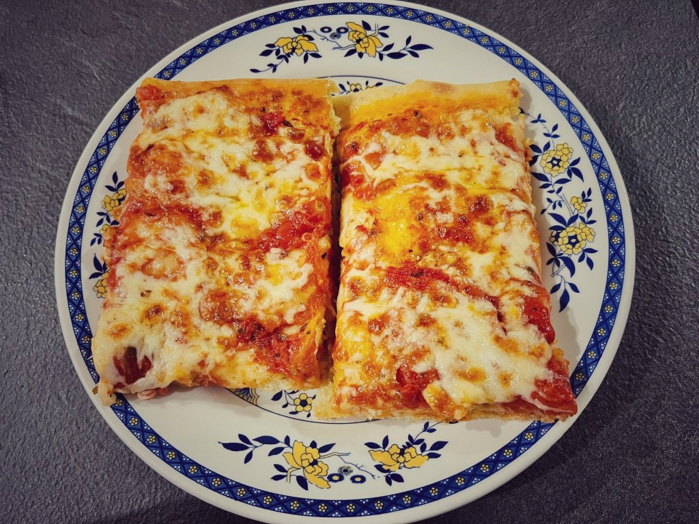

Pizza Margherita

Home made italian pizza recipe
This is the easiest italian pizza recipe you can find around, it won't be the best pizza in the world, but it's surely 10x better than any frozen pizza from the supermarket.
Let's dive in
Ingredients
- Flour 500gr
- Water 320gr
- Yeast 3gr
- Salt 10gr
- Olive oil 10gr
- Tomato souce
Now let's get our hands dirty
- Put the flour in a mixer
- Add water and yeast
- Start the mixer and mix it until you see some form
- Add salt and olive oil and keep mixing it
- Once it's done cover the pizza dough and let it rest for at least five hours
- Now roll out the pizza dough on a oven pan and leave it for another hour
- Turn on your oven at maximum power
- Add tomato souce with some olive oil and a teaspoon of salt
- Place the oven pan in the oven and leave it for around 10 minutes
- Add some mozzarella chease and leave it for about 5 minutes
- That's it, pizza's ready. ENJOY!